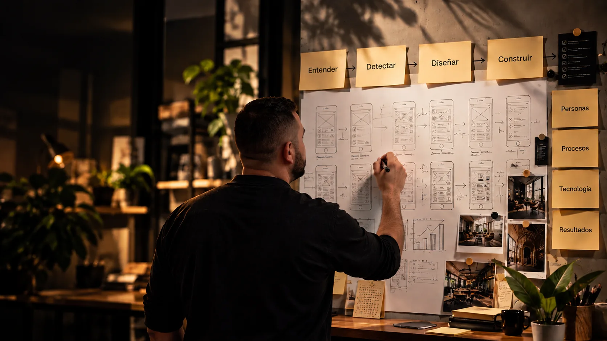
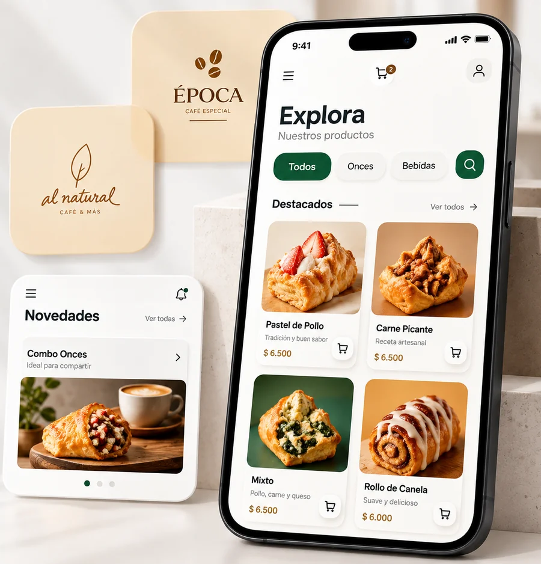
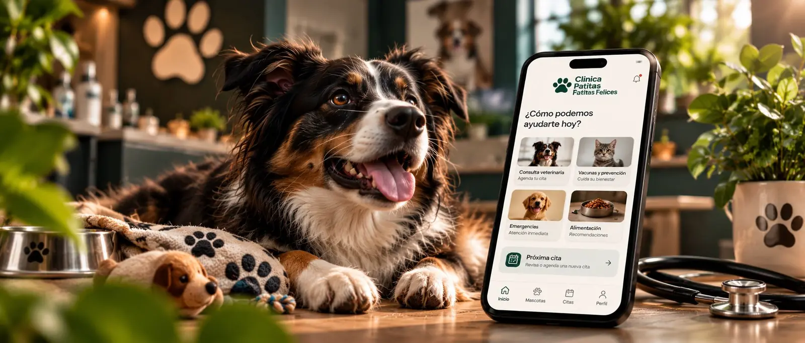
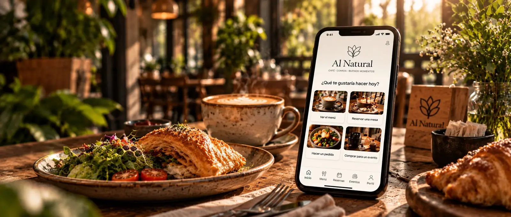
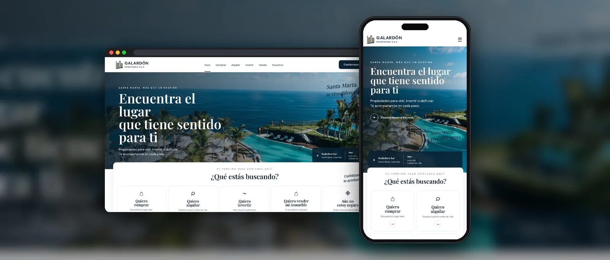

01. Entender
Qué necesita el cliente.
Mapa de experiencia
- Necesidades reales
- Puntos de contacto
- Fricciones y oportunidades

Estrategia · Experiencia · Diseño · Implementación
Ayudo a las empresas a identificar oportunidades de mejora, diseñar experiencias que conecten con sus clientes y desarrollar soluciones que respondan a sus objetivos.
1 de 8 · Qué puedo ayudarte a mejorar
A veces, el problema no es conseguir más clientes, sino lo que sucede después de que llegan. Identifico qué está dificultando tus objetivos y diseño soluciones para mejorar la experiencia de tus clientes y el funcionamiento de tu negocio.
Cuando tus clientes tienen dificultades para encontrar información, comprender tus servicios o completar una acción.
Ver cómo diseño la experienciaCuando recibes consultas, pero resulta difícil organizarlas, darles seguimiento o convertirlas en oportunidades.
Ver el diagnóstico y la asesoríaCuando existen tareas repetitivas, información dispersa o procesos que podrían funcionar mejor.
Ver diseño e implementaciónCuando tus clientes llegan por diferentes medios, pero la información y los procesos no están conectados adecuadamente.
Ver cómo conecto los recorridos2 de 8 · Customer Experience · Diseño de experiencias
Analizo cómo se relacionan tus clientes con tu negocio, identifico fricciones y diseño mejores recorridos conectando personas, procesos y tecnología.
Ver cómo trabajo en CX →Qué necesita el cliente.
Cómo debería funcionar.

Con procesos y tecnología.
3 de 8 · Mi metodología
Un proceso claro para diseñar soluciones que respondan a necesidades reales.
Estos cinco pasos desarrollan en detalle las tres ideas de Customer Experience de la sección anterior: entender, diseñar y conectar.
Comprendo el negocio, sus objetivos y sus clientes.
RecibesUn resumen para que confirmes que te entendí.
Identifico fricciones y oportunidades.
RecibesQué encontré y qué no necesitas.
Transformo los hallazgos en soluciones concretas.
RecibesEl prototipo y la propuesta con precio. Tú decides.
Implemento los componentes necesarios.
RecibesTu solución publicada, con el primer mes de acompañamiento incluido.
Evalúo resultados y detecto nuevas oportunidades.
RecibesUn plan mensual opcional, si quieres seguir mejorando.
4 de 8 · Servicios
Podemos empezar por entender qué sucede en tu negocio, diseñar una solución o trabajar en la mejora de algo que ya está funcionando.
Conoce más sobre mis servicios →Analizo la situación actual, identifico oportunidades y establezco una ruta de mejora.
Diseño y desarrollo soluciones adaptadas a las necesidades de tu negocio.
Reviso el funcionamiento, identifico oportunidades y mejoro lo que ya está en marcha.
5 de 8 · Proyectos
Cada proyecto parte de un contexto diferente. Estos casos muestran cómo abordo problemas, diseño experiencias y construyo soluciones adaptadas a las necesidades de cada negocio.
Caso real: negocio que ya lo usa. Prototipo: recorrido diseñado que puedes probar; aún no está en operación.
Ver más trabajo: sistemas y automatización6 de 8 · Pruébalo · Vive una experiencia
Elige un negocio y úsalo como si fueras su cliente.



7 de 8 · Capacidades
Comprensión y mejora de la experiencia.
Recorridos, puntos de contacto.
Interfaces claras y funcionales.
Mejora de la eficiencia y reducción de fricciones.
Integraciones y herramientas digitales.
Evaluación y nuevas oportunidades.
8 de 8 · Sobre mí
Soy Daniel Cárdenas, Administrador de Empresas y Especialista en Alta Gerencia. Me interesa comprender cómo funcionan las cosas, identificar qué podría hacerse mejor y transformar esas oportunidades en soluciones que puedan llevarse a la práctica.
Tunja, Boyacá. Trabajo remoto y presencial. Desde 2014 en administración, procesos y operaciones.
Conoce más sobre mí8 de 8 · Contacto
Cuéntame qué está pasando. Podemos empezar por comprender el problema y explorar qué tendría sentido hacer.
Iniciar conversación →Servicio que te interesa:
TU NEGOCIO
LO QUE QUIERES FACILITAR
Puedes elegir varias. Si no estás seguro, déjalo vacío.
TU PREGUNTA
CASI LISTO
Solo necesito tu nombre y tu WhatsApp. Te escribo en menos de 24 horas, con contexto, para que no tengas que repetir nada.
¿CUÁNDO TE ESCRIBO?
Yo confirmo la hora contigo por WhatsApp.
SOLICITUD RECIBIDA
Te escribo por WhatsApp en menos de 24 horas para confirmar la conversación. Si quieres adelantar, abre WhatsApp y envía tu mensaje: llegará con todo el contexto.
Abrir WhatsApp con mi mensaje ↗Mientras tanto, puedes vivir una experiencia completa.
¿Prefieres escribirme directo? Abrir WhatsApp daniel@danielcardenas.co